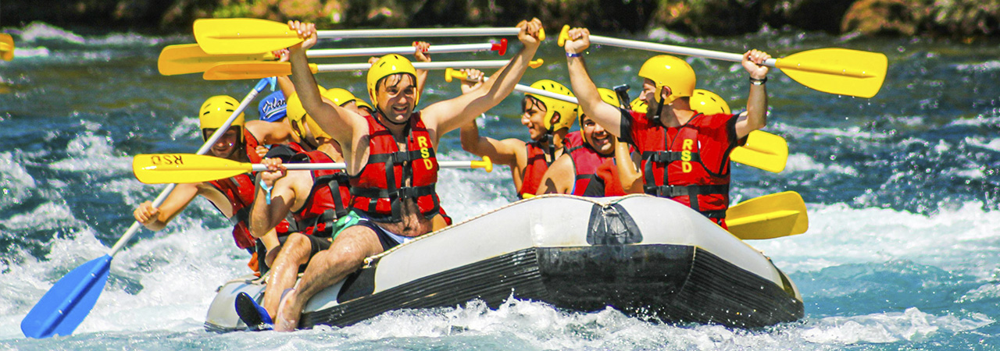

Trips - Rafting Guatemala
Adventure Awaits You!


Cahabon River
The Cahabon River is a top destination for whitewater rafting in Guatemala, offering thrilling rapids and stunning natural beauty.
This river is segmented into three sections, each with its own unique appeal. Whether you are looking for a quick adrenaline
rush or a multi-day adventure.
- Location: Central Guatemala, Lanquin.
- Level of Difficulty: Advanced | Class IV.
- Usual Minimum Age: 14 years old.
- Trip Options: 1-Day, and 2-Day Trips


Usumacinta River
Usumacinta is one of the largest and most powerful rivers in Central America, offering an unparalleled rafting experience.
The river is remote location and challenging rapids make it a true adventure, perfect for those looking to explore this wild side.
- Location: Northwestern Guatemala, bordering Mexico.
- Level of Difficulty: Intermediate | Class III
- Usual Minimum Age: 12 years old.
- Trip Options: 1-Day and Multi-Day Expeditions.


Sweet River
offers a more relaxed yet equally captivating rafting experience. Known for its serene stretches and scenic beauty, this river flows from Lake Izabal to the Caribbean Sea.
Sweet River is ideal for those who want to combine mild adventure with the opportunity to soak in the lush surroundings and vibrant wildlife.
- Location: Eastern Guatemala, Lake Izabal.
- Level of Difficulty: Beginner - Intermediate | Class I-II
- Usual Minimum Age: 8 years old.
- Trip Options: Half-Day, Full-Day, and Multi-Day Trips.


Trips Details
Cahabon River
- Location: Central Guatemala, Lanquin.
- Level of Difficulty: Advanced | Class IV.
- Usual Minimum Age: 14 years old.
- Trip Options: 1-Day, and 2-Day Trips
Usumacinta River
- Location: Northwestern Guatemala, bordering Mexico.
- Level of Difficulty: Intermediate | Class III
- Usual Minimum Age: 12 years old.
- Trip Options: 1-Day and Multi-Day Expeditions.
Sweet River
- Location: Eastern Guatemala, Lake Izabal.
- Level of Difficulty: Beginner - Intermediate | Class I-II
- Usual Minimum Age: 8 years old.
- Trip Options: Half-Day, Full-Day, and Multi-Day Trips.
Wild Rapids
- Location: Northwestern Guatemala, Wild River.
- Level of Difficulty: Intermediate | Class III-IV
- Usual Minimum Age: 12 years old.
- Trip Options: Half-Day, Full-Day.
Eagle Gorge
- Location: Western Guatemala, Gorge River.
- Level of Difficulty: Beginner - Intermediate | Class I-II
- Usual Minimum Age: 7 years old.
- Trip Options: Full-Day, and Multi-Day Trips.
The Adventure Awaits
Unforgettable experiences and family memories just one clic away!